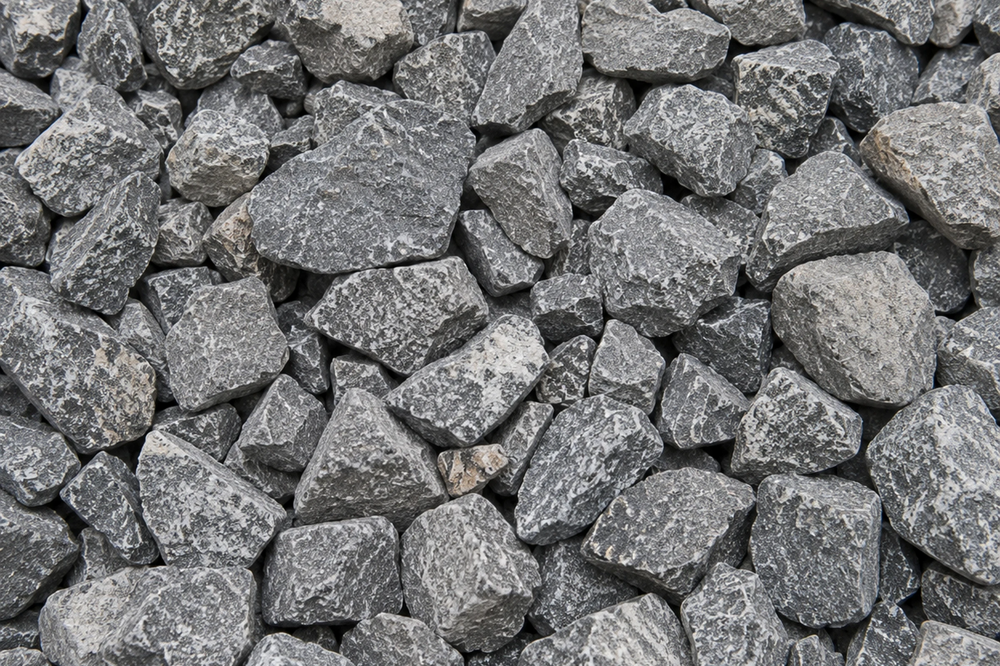
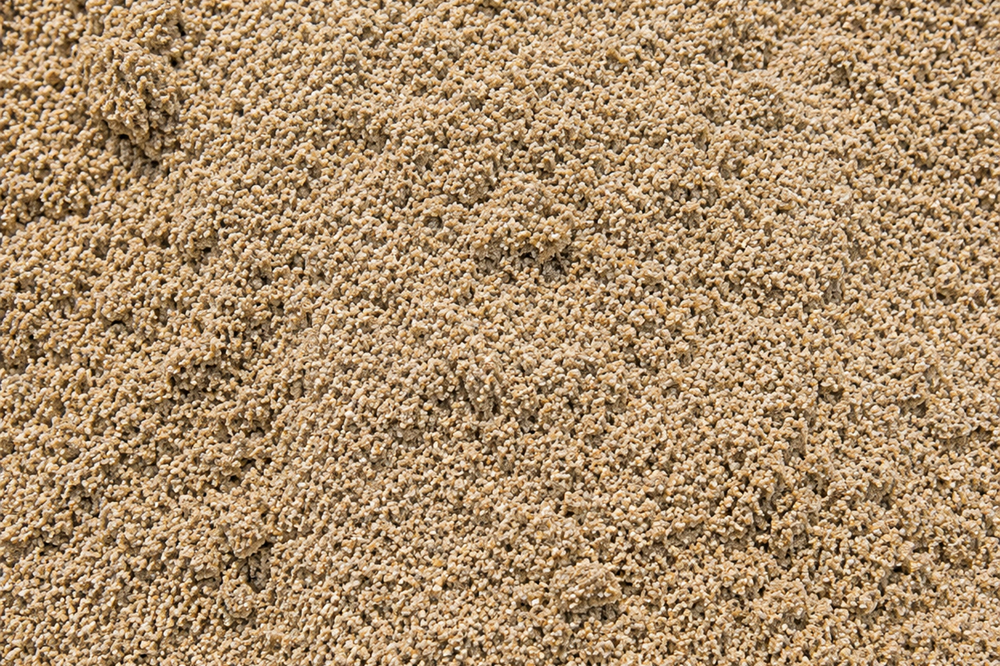
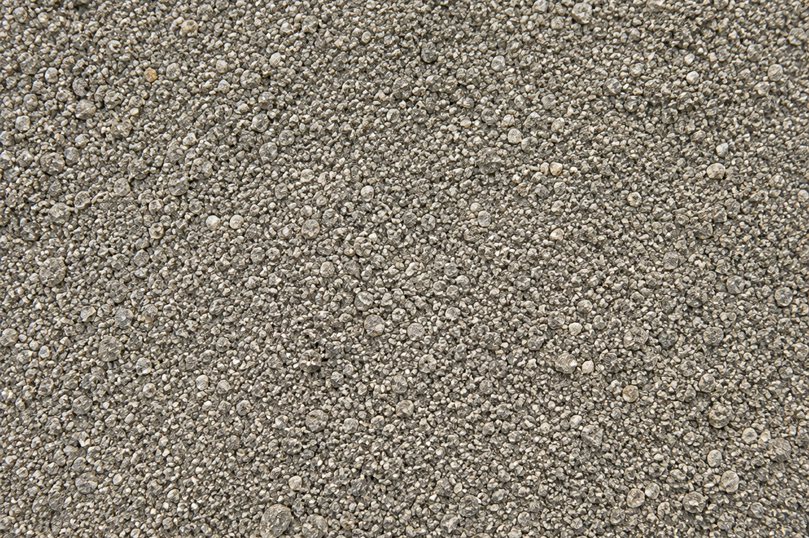
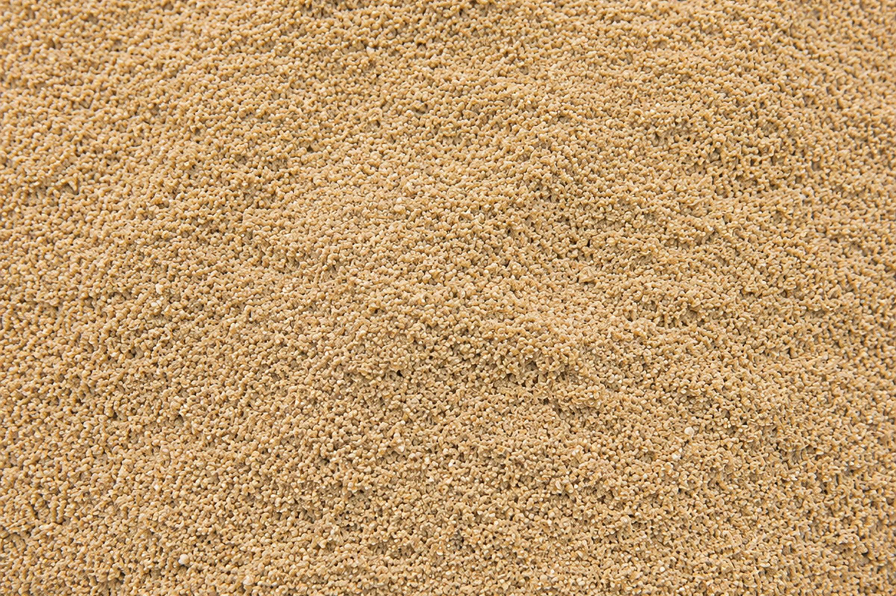
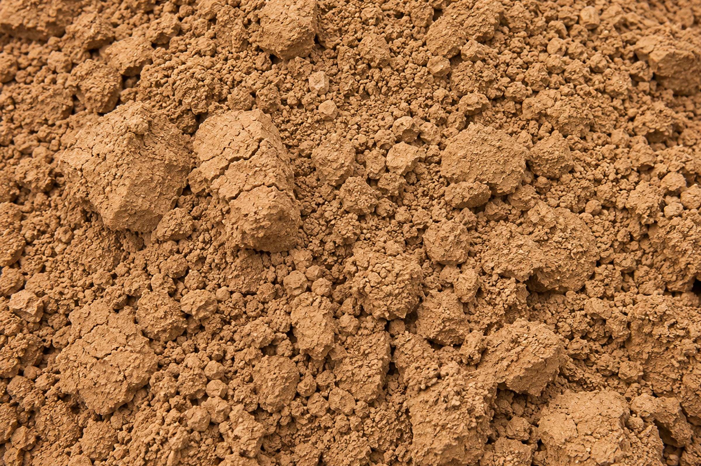
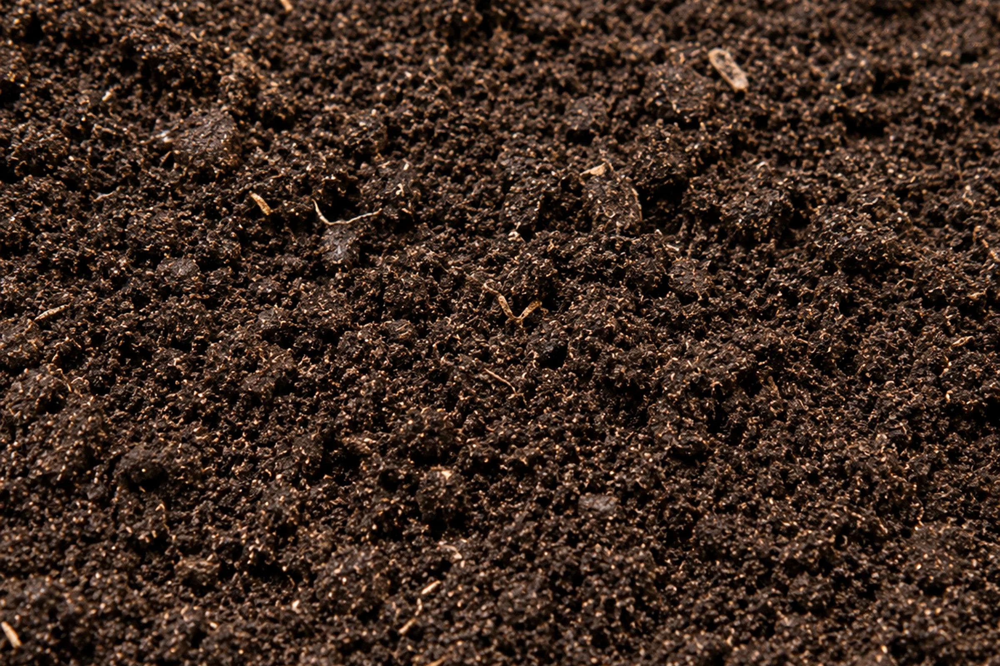
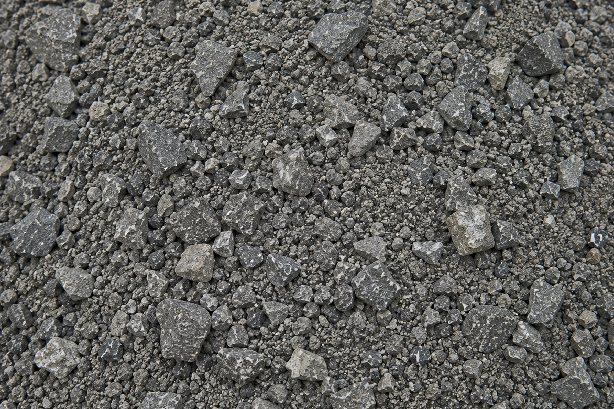
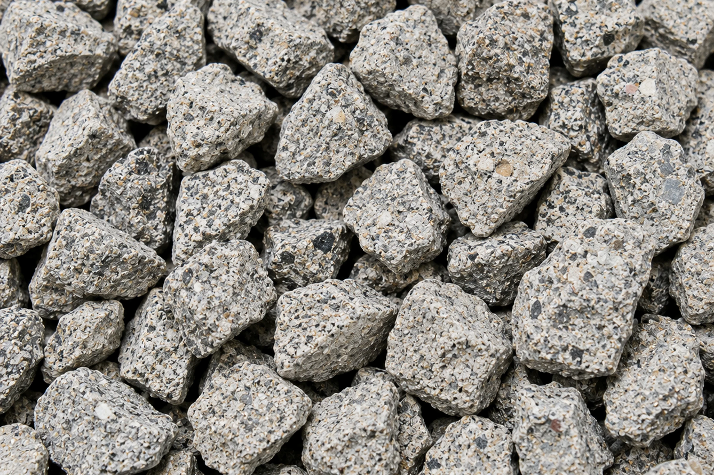
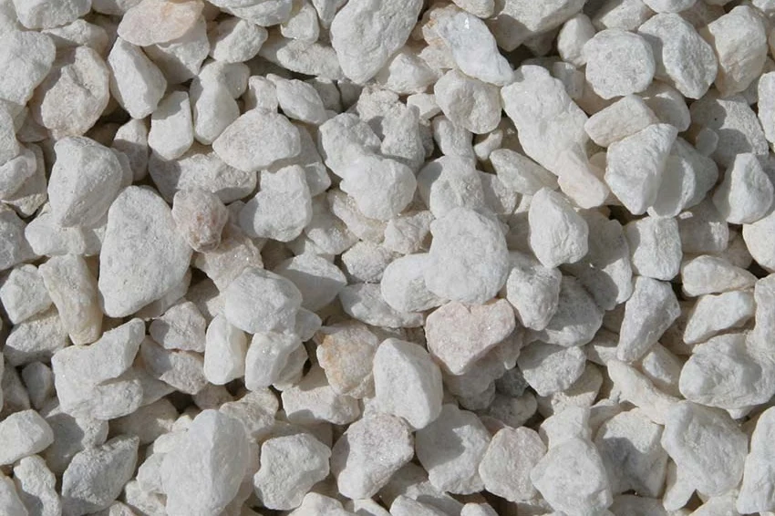

Bulk Transport
Nationwide
High-performance transport solutions across Australia, locally or remotely. From metropolitan construction to regional development, we move materials safely and on time.
Bulk transport solutions.
Across Australia.
Cartage Australia delivers end-to-end bulk transport and material supply solutions for major projects, businesses and communities nationwide.
Reliable. Efficient. Tailored to your needs. Our services are built on safety, performance and a commitment to getting the job done right.
High-performance transport solutions across Australia, locally or remotely. From metropolitan construction to regional development, we move materials safely and on time.
Supplying a wide range of quality materials including aggregates, sand, crushed rock, top soil and recycled products to keep projects moving.
Experienced in supporting civil and infrastructure projects of every scale with flexible solutions, dedicated fleets and responsive service.
Safety, compliance and care for people and the environment underpin everything we do. Our systems, people and fleet are built to high standards.
We source and supply a comprehensive range of quarry and construction materials, including wholesale supply of bulk materials for projects of every scale.

Graded stone products for concrete, drainage, road construction and general civil applications.

Concrete, plaster, bedding and washed sands sourced to suit project and specification requirements.

Fine graded quarry material suitable for bedding, paving, compaction, drainage and general civil works.

Specialty sand products sourced for landscaping, filtration, sporting surfaces and project-specific applications.

Clay materials for engineered fill, lining, rehabilitation and other civil or environmental applications.

Screened soil for landscaping, rehabilitation, garden construction and site finishing works.

Road base and crushed stone for pavements, access roads, hardstands and structural fill.

Recovered concrete and aggregate products supporting practical reuse and reduced waste.

Fill, quarry products and specialised materials sourced to meet individual project requirements.
With experienced teams, a modern fleet and strong supplier partnerships, we can mobilise quickly and deliver wherever your project takes you.
Get in TouchSpeak with Cartage Australia about bulk transport, material supply, dedicated fleet support or major project requirements anywhere in Australia.
Tell us about the work and your email app will open with the completed enquiry.